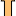
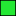

<!doctype html>
<html lang="en">
    <head>
        <meta charset="utf-8">
        <meta http-equiv="X-UA-Compatible" content="IE=edge">
        <meta name="viewport" content="initial-scale=1,user-scalable=no,maximum-scale=1,width=device-width">
        <meta name="mobile-web-app-capable" content="yes">
        <meta name="apple-mobile-web-app-capable" content="yes">
        <link rel="stylesheet" href="css/leaflet.css"><link rel="stylesheet" href="http://maxcdn.bootstrapcdn.com/font-awesome/4.6.1/css/font-awesome.min.css"><link rel="stylesheet" href="css/L.Control.Locate.min.css">
        <link rel="stylesheet" href="css/qgis2web.css">
        <link rel="stylesheet" href="css/Control.OSMGeocoder.css">
        <link rel="stylesheet" href="css/leaflet-measure.css">
        <style>
        html, body, #map {
            width: 100%;
            height: 100%;
            padding: 0;
            margin: 0;
        }
        </style>
        <title></title>
    </head>
    <body>
        <div id="map">
        </div>
        <script src="js/qgis2web_expressions.js"></script>
        <script src="js/leaflet.js"></script><script src="js/L.Control.Locate.min.js"></script>
        <script src="js/leaflet-svg-shape-markers.min.js"></script>
        <script src="js/leaflet.rotatedMarker.js"></script>
        <script src="js/leaflet.pattern.js"></script>
        <script src="js/leaflet-hash.js"></script>
        <script src="js/Autolinker.min.js"></script>
        <script src="js/rbush.min.js"></script>
        <script src="js/labelgun.min.js"></script>
        <script src="js/labels.js"></script>
        <script src="js/Control.OSMGeocoder.js"></script>
        <script src="js/leaflet-measure.js"></script>
        <script src="data/LOTsconstruction_0.js"></script>
        <script src="data/Info_1.js"></script>
        <script src="data/Runion_mobilit_110221_2.js"></script>
        <script src="data/NotelectureCROPC_3.js"></script>
        <script src="data/GeoCodingPluginResults_4.js"></script>
        <script>
        var map = L.map('map', {
            zoomControl:true, maxZoom:28, minZoom:1
        })
        var hash = new L.Hash(map);
        map.attributionControl.addAttribution('<a href="https://github.com/tomchadwin/qgis2web" target="_blank">qgis2web</a>');
        L.control.locate().addTo(map);
        var measureControl = new L.Control.Measure({
            primaryLengthUnit: 'meters',
            secondaryLengthUnit: 'kilometers',
            primaryAreaUnit: 'sqmeters',
            secondaryAreaUnit: 'hectares'
        });
        measureControl.addTo(map);
        var bounds_group = new L.featureGroup([]);
        var basemap0 = L.tileLayer('http://{s}.tile.openstreetmap.de/tiles/osmde/{z}/{x}/{y}.png', {
            attribution: '&copy; <a href="http://openstreetmap.org">OpenStreetMap</a> contributors,<a href="http://creativecommons.org/licenses/by-sa/2.0/">CC-BY-SA</a>',
            maxZoom: 28
        });
        basemap0.addTo(map);
        function setBounds() {
            if (bounds_group.getLayers().length) {
                map.fitBounds(bounds_group.getBounds());
            }
        }
        function pop_LOTsconstruction_0(feature, layer) {
            var popupContent = '<table>\
                    <tr>\
                        <td colspan="2">' + (feature.properties['Layer'] !== null ? Autolinker.link(String(feature.properties['Layer'])) : '') + '</td>\
                    </tr>\
                    <tr>\
                        <td colspan="2">' + (feature.properties['Phase'] !== null ? Autolinker.link(String(feature.properties['Phase'])) : '') + '</td>\
                    </tr>\
                </table>';
            layer.bindPopup(popupContent, {maxHeight: 400});
        }

        function style_LOTsconstruction_0_0(feature) {
            switch(String(feature.properties['Phase'])) {
                case 'Phase 2':
                    return {
                pane: 'pane_LOTsconstruction_0',
                opacity: 1,
                color: 'rgba(0,0,0,1.0)',
                dashArray: '',
                lineCap: 'butt',
                lineJoin: 'miter',
                weight: 1.0, 
                fill: true,
                fillOpacity: 1,
                fillColor: 'rgba(36,232,52,1.0)',
            }
                    break;
                case 'Phase 3':
                    return {
                pane: 'pane_LOTsconstruction_0',
                opacity: 1,
                color: 'rgba(114,133,132,1.0)',
                dashArray: '',
                lineCap: 'butt',
                lineJoin: 'miter',
                weight: 1.0, 
                fill: true,
                fillOpacity: 1,
                fillColor: 'rgba(165,191,221,1.0)',
            }
                    break;
                default:
                    return {
                pane: 'pane_LOTsconstruction_0',
                opacity: 1,
                color: 'rgba(0,0,0,1.0)',
                dashArray: '',
                lineCap: 'butt',
                lineJoin: 'miter',
                weight: 1.0, 
                fill: true,
                fillOpacity: 1,
                fillColor: 'rgba(234,170,127,1.0)',
            }
                    break;
            }
        }
        map.createPane('pane_LOTsconstruction_0');
        map.getPane('pane_LOTsconstruction_0').style.zIndex = 400;
        map.getPane('pane_LOTsconstruction_0').style['mix-blend-mode'] = 'normal';
        var layer_LOTsconstruction_0 = new L.geoJson(json_LOTsconstruction_0, {
            attribution: '<a href=""></a>',
            pane: 'pane_LOTsconstruction_0',
            onEachFeature: pop_LOTsconstruction_0,
            style: style_LOTsconstruction_0_0,
        });
        bounds_group.addLayer(layer_LOTsconstruction_0);
        map.addLayer(layer_LOTsconstruction_0);
        function pop_Info_1(feature, layer) {
            var popupContent = '<table>\
                    <tr>\
                        <td colspan="2">' + (feature.properties['Info'] !== null ? Autolinker.link(String(feature.properties['Info'])) : '') + '</td>\
                    </tr>\
                    <tr>\
                        <td colspan="2">' + (feature.properties['Suivi'] !== null ? Autolinker.link(String(feature.properties['Suivi'])) : '') + '</td>\
                    </tr>\
                </table>';
            layer.bindPopup(popupContent, {maxHeight: 400});
        }

        function style_Info_1_0() {
            return {
                pane: 'pane_Info_1',
        rotationAngle: 0.0,
        rotationOrigin: 'center center',
        icon: L.icon({
            iconUrl: 'markers/Info_icon.svg',
            iconSize: [19.0, 19.0]
        }),
            }
        }
        map.createPane('pane_Info_1');
        map.getPane('pane_Info_1').style.zIndex = 401;
        map.getPane('pane_Info_1').style['mix-blend-mode'] = 'normal';
        var layer_Info_1 = new L.geoJson(json_Info_1, {
            attribution: '<a href=""></a>',
            pane: 'pane_Info_1',
            onEachFeature: pop_Info_1,
            pointToLayer: function (feature, latlng) {
                var context = {
                    feature: feature,
                    variables: {}
                };
                return L.marker(latlng, style_Info_1_0(feature));
            },
        });
        bounds_group.addLayer(layer_Info_1);
        map.addLayer(layer_Info_1);
        function pop_Runion_mobilit_110221_2(feature, layer) {
            var popupContent = '<table>\
                    <tr>\
                        <td colspan="2">' + (feature.properties['Info'] !== null ? Autolinker.link(String(feature.properties['Info'])) : '') + '</td>\
                    </tr>\
                    <tr>\
                        <td colspan="2">' + (feature.properties['Suivi'] !== null ? Autolinker.link(String(feature.properties['Suivi'])) : '') + '</td>\
                    </tr>\
                </table>';
            layer.bindPopup(popupContent, {maxHeight: 400});
        }

        function style_Runion_mobilit_110221_2_0() {
            return {
                pane: 'pane_Runion_mobilit_110221_2',
                radius: 10.0,
                opacity: 1,
                color: 'rgba(0,0,0,1.0)',
                dashArray: '',
                lineCap: 'butt',
                lineJoin: 'miter',
                weight: 1,
                fill: true,
                fillOpacity: 1,
                fillColor: 'rgba(253,191,111,1.0)',
            }
        }
        map.createPane('pane_Runion_mobilit_110221_2');
        map.getPane('pane_Runion_mobilit_110221_2').style.zIndex = 402;
        map.getPane('pane_Runion_mobilit_110221_2').style['mix-blend-mode'] = 'normal';
        var layer_Runion_mobilit_110221_2 = new L.geoJson(json_Runion_mobilit_110221_2, {
            attribution: '<a href=""></a>',
            pane: 'pane_Runion_mobilit_110221_2',
            onEachFeature: pop_Runion_mobilit_110221_2,
            pointToLayer: function (feature, latlng) {
                var context = {
                    feature: feature,
                    variables: {}
                };
                return L.shapeMarker(latlng, style_Runion_mobilit_110221_2_0(feature));
            },
        });
        bounds_group.addLayer(layer_Runion_mobilit_110221_2);
        map.addLayer(layer_Runion_mobilit_110221_2);
        function pop_NotelectureCROPC_3(feature, layer) {
            var popupContent = '<table>\
                    <tr>\
                        <td colspan="2">' + (feature.properties['Info'] !== null ? Autolinker.link(String(feature.properties['Info'])) : '') + '</td>\
                    </tr>\
                    <tr>\
                        <td colspan="2">' + (feature.properties['Suivi'] !== null ? Autolinker.link(String(feature.properties['Suivi'])) : '') + '</td>\
                    </tr>\
                </table>';
            layer.bindPopup(popupContent, {maxHeight: 400});
        }

        function style_NotelectureCROPC_3_0() {
            return {
                pane: 'pane_NotelectureCROPC_3',
                radius: 8.0,
                opacity: 1,
                color: 'rgba(0,0,0,1.0)',
                dashArray: '',
                lineCap: 'butt',
                lineJoin: 'miter',
                weight: 1,
                fill: true,
                fillOpacity: 1,
                fillColor: 'rgba(227,26,28,1.0)',
            }
        }
        map.createPane('pane_NotelectureCROPC_3');
        map.getPane('pane_NotelectureCROPC_3').style.zIndex = 403;
        map.getPane('pane_NotelectureCROPC_3').style['mix-blend-mode'] = 'normal';
        var layer_NotelectureCROPC_3 = new L.geoJson(json_NotelectureCROPC_3, {
            attribution: '<a href=""></a>',
            pane: 'pane_NotelectureCROPC_3',
            onEachFeature: pop_NotelectureCROPC_3,
            pointToLayer: function (feature, latlng) {
                var context = {
                    feature: feature,
                    variables: {}
                };
                return L.shapeMarker(latlng, style_NotelectureCROPC_3_0(feature));
            },
        });
        bounds_group.addLayer(layer_NotelectureCROPC_3);
        map.addLayer(layer_NotelectureCROPC_3);
        function pop_GeoCodingPluginResults_4(feature, layer) {
            var popupContent = '<table>\
                    <tr>\
                        <td colspan="2">' + (feature.properties['address:(0,0)'] !== null ? Autolinker.link(String(feature.properties['address:(0,0)'])) : '') + '</td>\
                    </tr>\
                </table>';
            layer.bindPopup(popupContent, {maxHeight: 400});
        }

        function style_GeoCodingPluginResults_4_0() {
            return {
                pane: 'pane_GeoCodingPluginResults_4',
                radius: 4.0,
                opacity: 1,
                color: 'rgba(0,0,0,1.0)',
                dashArray: '',
                lineCap: 'butt',
                lineJoin: 'miter',
                weight: 1,
                fill: true,
                fillOpacity: 1,
                fillColor: 'rgba(171,103,129,1.0)',
            }
        }
        map.createPane('pane_GeoCodingPluginResults_4');
        map.getPane('pane_GeoCodingPluginResults_4').style.zIndex = 404;
        map.getPane('pane_GeoCodingPluginResults_4').style['mix-blend-mode'] = 'normal';
        var layer_GeoCodingPluginResults_4 = new L.geoJson(json_GeoCodingPluginResults_4, {
            attribution: '<a href=""></a>',
            pane: 'pane_GeoCodingPluginResults_4',
            onEachFeature: pop_GeoCodingPluginResults_4,
            pointToLayer: function (feature, latlng) {
                var context = {
                    feature: feature,
                    variables: {}
                };
                return L.circleMarker(latlng, style_GeoCodingPluginResults_4_0(feature));
            },
        });
        bounds_group.addLayer(layer_GeoCodingPluginResults_4);
        map.addLayer(layer_GeoCodingPluginResults_4);
        var osmGeocoder = new L.Control.OSMGeocoder({
            collapsed: false,
            position: 'topright',
            text: 'Search',
        });
        osmGeocoder.addTo(map);
        var baseMaps = {};
        L.control.layers(baseMaps,{' GeoCoding Plugin Results': layer_GeoCodingPluginResults_4,' Note lecture CR OPC': layer_NotelectureCROPC_3,' Réunion_mobilité_11-02-21': layer_Runion_mobilit_110221_2,' Info': layer_Info_1,'LOTs construction<br /><table><tr><td style="text-align: center;"></td><td>Phase 2</td></tr><tr><td style="text-align: center;"></td><td>Phase 3</td></tr><tr><td style="text-align: center;"></td><td></td></tr></table>': layer_LOTsconstruction_0,}).addTo(map);
        setBounds();
        var i = 0;
        layer_LOTsconstruction_0.eachLayer(function(layer) {
            var context = {
                feature: layer.feature,
                variables: {}
            };
            layer.bindTooltip((layer.feature.properties['Layer'] !== null?String('<div style="color: #000000; font-size: 8pt; font-family: \'MS Shell Dlg 2\', sans-serif;">' + layer.feature.properties['Layer']) + '</div>':''), {permanent: true, offset: [-0, -16], className: 'css_LOTsconstruction_0'});
            labels.push(layer);
            totalMarkers += 1;
              layer.added = true;
              addLabel(layer, i);
              i++;
        });
        var i = 0;
        layer_GeoCodingPluginResults_4.eachLayer(function(layer) {
            var context = {
                feature: layer.feature,
                variables: {}
            };
            layer.bindTooltip((layer.feature.properties['address'] !== null?String('<div style="color: #000000; font-size: 12pt; font-family: \'MS Shell Dlg 2\', sans-serif;">' + layer.feature.properties['address']) + '</div>':''), {permanent: true, offset: [-0, -16], className: 'css_GeoCodingPluginResults_4'});
            labels.push(layer);
            totalMarkers += 1;
              layer.added = true;
              addLabel(layer, i);
              i++;
        });
        resetLabels([layer_LOTsconstruction_0,layer_GeoCodingPluginResults_4]);
        map.on("zoomend", function(){
            resetLabels([layer_LOTsconstruction_0,layer_GeoCodingPluginResults_4]);
        });
        map.on("layeradd", function(){
            resetLabels([layer_LOTsconstruction_0,layer_GeoCodingPluginResults_4]);
        });
        map.on("layerremove", function(){
            resetLabels([layer_LOTsconstruction_0,layer_GeoCodingPluginResults_4]);
        });
        </script>
    </body>
</html>
